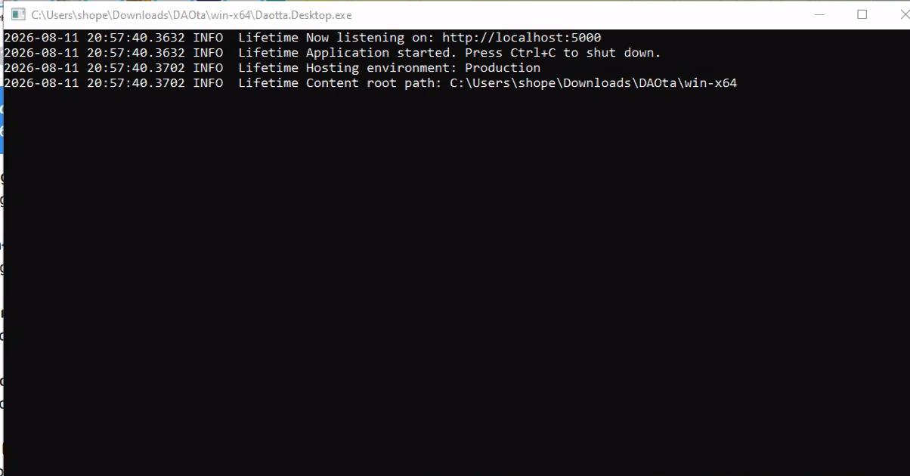
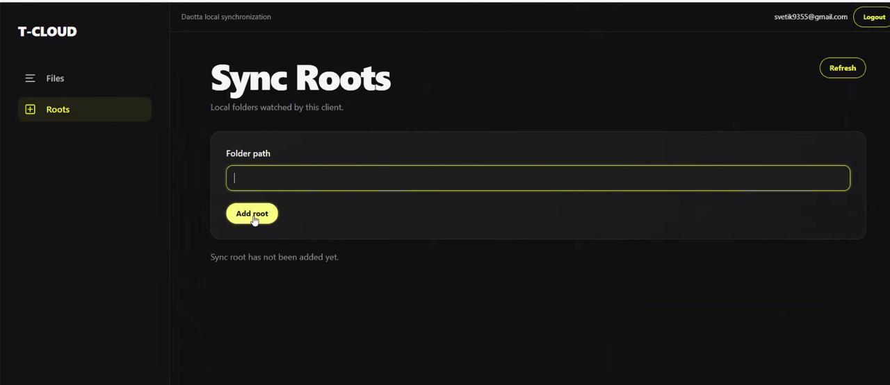
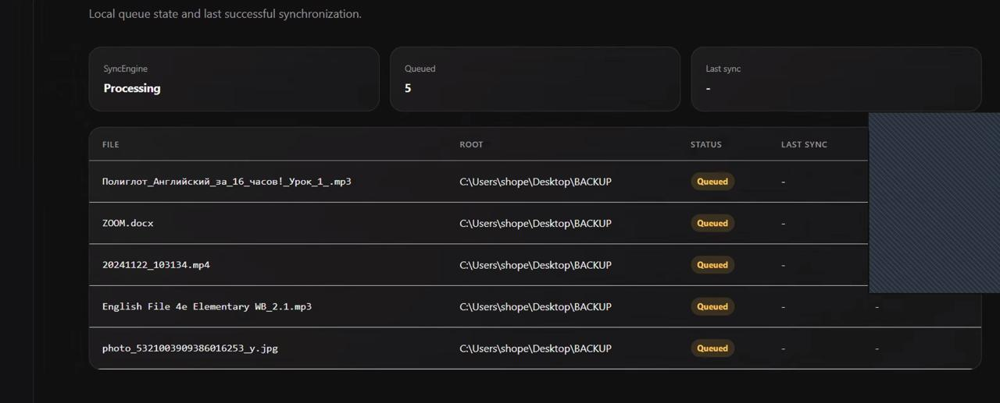
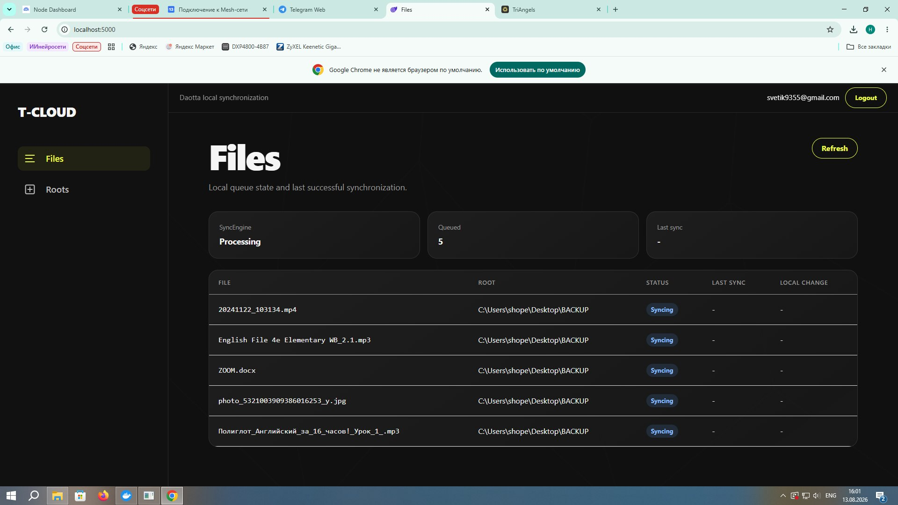
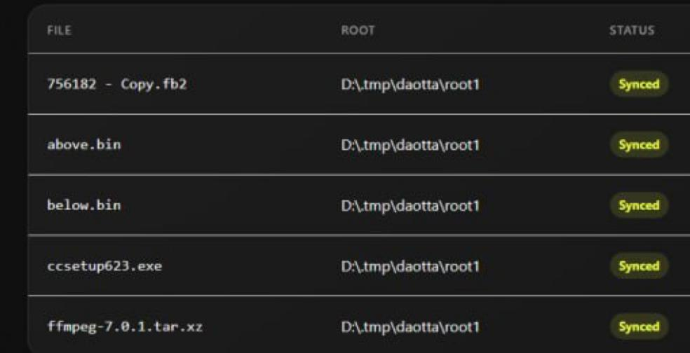
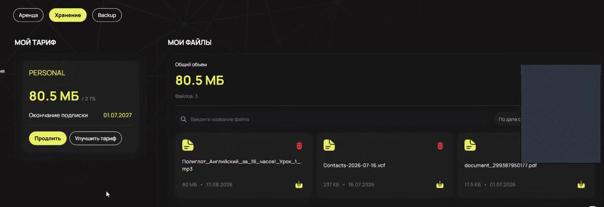

Пошаговая инструкция
Настройка T-Cloud Backup
Два способа запуска — с веб-интерфейсом или через консоль. После входа добавьте папку и проверьте синхронизацию.
Сначала распакуйте архив
Это обязательный шаг для Windows и Linux. Не запускайте приложение прямо из скачанного архива.
WindowsНажмите правой кнопкой мыши на архив, выберите Извлечь все… и укажите отдельную постоянную папку, например
C:\TCloudBackup.LinuxРаспакуйте архив через файловый менеджер в отдельную папку, например
/home/alex/tcloud-backup.Важно: после настройки не удаляйте и не перемещайте распакованную папку приложения. Запускайте T-Cloud Backup именно из неё.
Windows
Все действия выполняются в распакованной папке приложения.
Запуск с интерфейсомДважды нажмите
Daotta.Desktop.exe. Откроется чёрное окно. Не закрывайте его: приложение работает, пока это окно запущено.Откройте интерфейсКогда появится строка
Now listening on: http://localhost:5000, откройте в браузере http://localhost:5000.Запуск без интерфейсаОткройте PowerShell в папке приложения и выполните команду ниже. После запуска появится список доступных команд.
Консольный режим Windows
.\Daotta.Desktop.exe console
Now listening on: http://localhost:5000. Окно нужно оставить открытым. Нажмите на скриншот, чтобы увеличить.Linux
Откройте терминал в распакованной папке приложения.
Разрешите запускОдин раз сделайте файл исполняемым.
Запуск с интерфейсомВыполните
./Daotta.Desktop, оставьте процесс запущенным и откройте http://localhost:5000.Запуск без интерфейсаВыполните
./Daotta.Desktop console. После запуска появится список доступных команд.Сделать файл исполняемым
chmod +x ./Daotta.DesktopЗапуск UI
./Daotta.DesktopКонсольный режим
./Daotta.Desktop consoleВход и добавление папки
Через веб-интерфейс
Войдите в T-CloudИспользуйте свои логин и пароль.
Откройте RootsВ левом меню нажмите Roots.
Введите путь к папкеПуть вводится вручную полностью. Например:
C:\Users\Alex\Documents или /home/alex/Documents.Нажмите Add rootПосле добавления клиент начнёт отслеживать папку и загружать новые файлы автоматически.

Через консоль
Команды одинаковые для Windows и Linux:
Полная первичная настройка
login
add <path>
dashboardlogin — введите логин и пароль T-Cloud. add <path> — добавьте папку. Например: add "C:\Users\Alex\Documents" или add "/home/alex/Documents".
dashboard показывает текущее состояние синхронизации и обновляет экран каждые две секунды. Для выхода нажмите
Ctrl+C.Как понять, что всё работает
QueuedФайл добавлен в очередь и ждёт обработки.
SyncingФайл сейчас загружается.
SyncedФайл успешно синхронизирован.



Проверка в личном кабинете
После успешной синхронизации откройте T-Cloud → Хранение. Загруженные файлы должны появиться в разделе Мои файлы.

Готово: папка добавлена, файлы получили статус Synced и появились в личном кабинете.